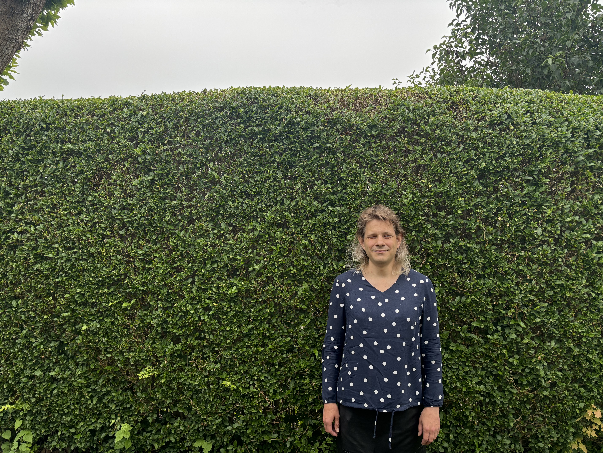
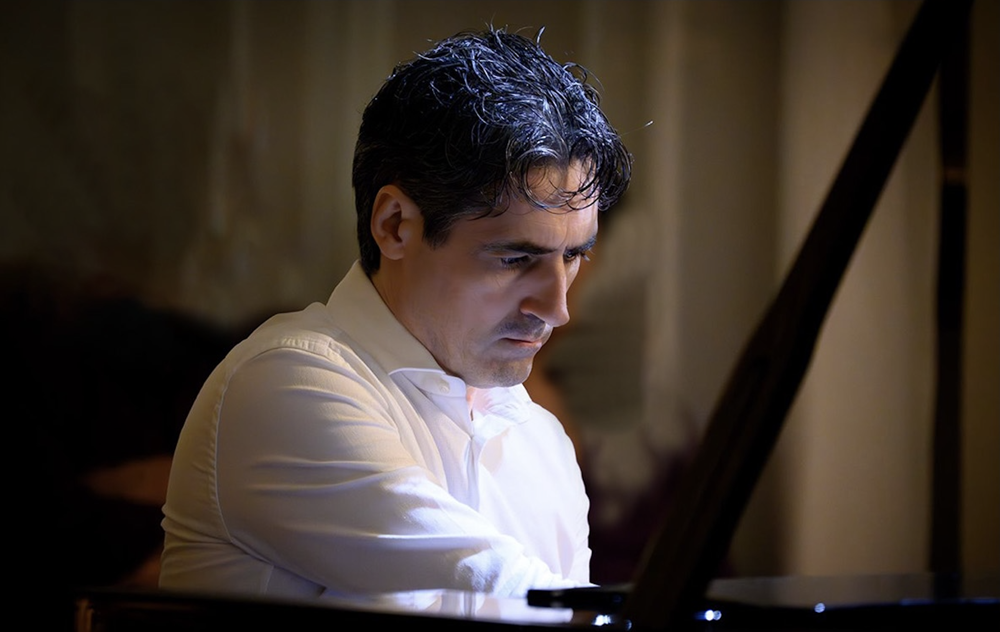

Program
Keynotes · Papers · Concerts · Workshops · Installations
Program Overview
Over three days, ICSC 2026 brings together keynote talks, paper presentations, concerts, workshops and sound installations, with particular attention this year to the work and legacy of Gottfried Michael Koenig and James Tenney.
The schedule below is provisional: exact timings and room assignments may be adjusted closer to the event.
Keynote Speakers
Keynotes
Jeanette Claassen

Jeanette Claassen is a student of computer science and electrical engineering at the university of Paderborn, Germany. Her focus is on accessibility.
She has been an active member of the Csound community for several years, where she is known for her practical user defined opcodes (UDOs) for mainstream and pop applications as well as HRTF based binaural spatialisation and eclectic physical and semi-physical models and pure sound-alikes.
Her Csound based music utilises HRTF to create 3d scenes on the border between concrete reality and abstract imagery. She also regularly employs live or sampled Csound instruments in more typical pop, electro and other music.
Outside of Csound, Jeanette is a long standing member of the Linux Audio community, relying solely on the Linux commandline to produce music spanning pop, electro, rock and baroque.
The uniting theme in all her sound and music work is the love of sound design, especially based on pure synthesis. For this she uses all available tools, hard- and software, employing a wide variety of techniques.
Alessandro Petrolati

Graduated in Piano and Electronic Music from the Conservatory of Pesaro (studying with Valentini and Giordani), he also attended the Opera program at the Pescara Music Academy.
He has performed in electronic and contemporary music contexts, including the State Auditorium in Rome, the Royal Palace of Milan, the Pesaro Film Festival, 91Mq in Berlin, Piazza del Popolo in Rome (with Ennio Morricone and astronaut Roberto Vittori), the Genoa Science Festival, ICSC in Saint Petersburg, Sguardi Sonori, and the Macerata Opera Festival.
His composition “Turnaround” received an honorable mention at the Luigi Russolo International Competition. He has taught for several years at the University of Macerata, the Academy of Fine Arts in Urbino, and at the Conservatories of Pesaro (Rossini), Udine (Tomadini), and Cesena (Maderna-Lettimi).
In 2012, he founded the software company apeSoft, developing music applications for Apple devices that are distributed internationally and used by hundreds of thousands of users. Since 2019, he has been involved in the assisted orchestration project Orchidea, coordinated by Carmine Emanuele Cella and supported by IRCAM (Paris), HEM (Geneva), and CNMAT at the University of California, Berkeley. As part of this project, he published an article in the Computer Music Journal (MIT Press).
He works as a software/firmware designer and programmer for Studiologic, a leading company in electronic musical instruments, and also provides technical consultancy for the prestigious piano manufacturer Schulze Pollmann.
In recent years, he has been active as a solo pianist and in chamber ensembles throughout Italy.
Micah Frank

Micah Frank is an electronic artist, composer, and instrument maker working across sound sculpture, live performance, and music technology. Drawing on algorithmic and generative methods, his pieces emerge from field recordings, bespoke software, and real-time synthesis. He has performed internationally for over two decades.
Since founding Puremagnetik in 2006, Frank has directed the Brooklyn-based label's development of experimental musical instruments, hardware devices, and sound design platforms, many built around the Csound audio programming language.
His collaborative work includes the ensemble LARUM, which explores contemporary reinterpretations of classical material through live performance, as well as VONDISY, a project with Kodomo inspired by 1980s cinema soundtracks and early industrial music aesthetics.
Frank studied jazz performance at Mannes School of Music and The New School. Early work in sound design led to freelance collaborations with Ableton and Native Instruments, before he went on to lead sound content development at Ableton's Berlin office from 2013 to 2015.
Zone 1 of 3 · Papers, Keynotes & Plenary
General Program
Paper presentations, keynotes and plenary moments, day by day. Workshops and installations run in parallel — see the dedicated zone below.
20 October
Registration
Opening & Welcome — book news & in memoriam
A Toolkit for Empirical Impulse Response Preparation
ARA and Cabbage, a patch made in heaven?
Embedding Live Machine Learning in Csound: Emotion-Driven Harmony via an ONNX-Runtime Opcode
Orchestrating an Interpreter: Csound7 as a Host for Symbolic Programs
Break
Keynote 1 - JEANETTE CLAASSEN
Break
Cabbage 3: Not Your Garden Variety Vegetable
NERD: A Node Editor for Csound Integration in Scientific and Artistic Contexts
CStore: A Browser-Based Studio for AI-Generated and LLM-Revised Csound Instrument Design
CsoundUnity 4.0: Toward a Csound-Based Interactive Audio Platform for Unity
Csound in the MetaVerse - Make It Yours: Personalizing Instruments, Worlds, and Live Sound in CsoundMeta
Csound on Embedded Risc V and Xtensa Architectures
Break
Concert 1 — see Concerts & Gibellina
Day 2 · Wednesday
21 October
Registration
Evoking Harmony via Convolution
An Analysis-Guided Workflow for Constructing Playable Csound Physical Models: A Tupipa Case Study
Four Routes Through Hyperspace: Wavetable Navigation Strategies via Givens Rotations
Neural Virtual Analog Modeling in Csound via Real-Time Recurrent Inference
The Verified Core and the New Frontend: “Software-as-a-Medical-Device” (SaMD) Methodology Applied to Csound Frontend Development
A Rapid Opcode Development Workflow for Real-Time Physical Modelling in Csound
Break
Spatial Agents: A Timbre-Driven Ambisonic Instrument for Live Electronics in Csound and Max
One Environment, One Chain: Csound's arduinoRead as a Native Sensor Interface for Performance-Oriented IMU Control
csonus: An open-source collection of opcodes for algorithmic composition and experimental sound design
Shaping Musical Texture through Markov-Matrix Operations in Csound
Lunch Break
Keynote 2 - ALESSANDRO PETROLATI
Break
Introducing Dr.C: 40+ Years of Csound and Computer Music, Now an Agentic AI Collaborator for Learning and Building Instruments, Effects, Plugins, and Web Apps
From Brainwaves to Csound: An Exploratory Audiovisual System with EEG and LLM-Based Agent Control in Unity
Immersive Engagement: Building the "Wildtrace" Sonic World with AI Assistance
A Vision-to-Music System for Accessible Interactive Sound Experiences Using Computer Vision and Csound
Break
Keynote 3 - MICAH FRANK
Break
Concert 2 — see Concerts & Gibellina
Break
Gala Dinner
Day 3 · Thursday
22 October
Real-Time Song Generation: A Csound API Case Study
The Process of Constructing Postcard from Sertões within a Csound Environment
Somatic Continuum Paper
pch2csd: From Command-Line Converter to Web-Based Modular Synthesis Environment
OnLive 音: A Browser-Based Real-Time Audio Effects System Using Csound
Csound Brain Lab: A Web Environment for Performing and Researching Brain-Computer Music Interfaces
Break
Idyl: A Reactive Functional Language for Time, with Csound as a First-Class Backend
Cordelia has wisdom: reshaping a live coding method
A Csound-Based Programmable Sound Engine for Machine-Listening-Driven Real-Time Electronic Music
One Timeline, Many Renderings: A Wolfram Language Paclet for heterogeneous musical output
Lunch Break
Round Table
Closing Remarks & News
Concert 3 — see Concerts & Gibellina
Zone 2 of 3 · Hands-on Sessions & Sound Art
Workshop & Installations
The five conference workshops and the sound installation, running in parallel with the paper sessions above.
20 October
Workshop 1
16:30 – 18:30
Joachim Heintz - Composing Self-Generative Structures in Csound
The workshop explores self-generative musical structures based on recursive instrument calls in Csound 7. Participants investigate different control strategies and non-hierarchical processes, combining coding with artistic decision-making.
Installation
Open from Day 1, 17:00 until Day 3, 13:00
Tyler Kaufman - Somatic Continuum
An interactive audiovisual installation in which the visitor’s face, hands, heartbeat, and presence become the instrument itself. Body gestures and biometric data control a generative Csound environment of more than twenty instruments, creating a different audiovisual experience for each participant.
Day 2 · Wednesday
21 October
Workshop 2
10:00 - 11:00
Greg Schiemer, Thorin Kerr - Phonehenge (2026) for Satellite Gamelan
Participants use their smartphones as musical instruments through a Csound web app. The phones form a collective mobile speaker array, exploring a 25-note microtonal scale without external amplification.
Workshop 3
11:30 - 13:00
Jacopo Greco d'Alceo - Cordelia, live coding in Csound
A hands-on introduction to Cordelia, a language for live coding, composition, and notation with Csound. Participants explore its architecture and create their own instruments, effects, and functions using its plugin system.
Workshop 4
15:30 - 17:00
Richard Boulanger - Introducing Csound in the MetaVerse 2.0: A Workshop/Jam Session
Participants use Meta Quest 3 headsets to interact with sound objects in a shared virtual environment powered by Csound and CsoundUnity. Sounds are manipulated through gestures within a collaborative networked jam session.
Richard Boulanger, Hung Vo - CsoundMeta Dreams of Sicily
A networked XR performance dedicated to John ffitch, combining CsoundUnity, Meta Quest 3 headsets, live percussion, spatial audio, and remote performers. The shared virtual environment draws on Sicilian landscapes, architecture, and mythology through AI-generated visual worlds.
Installation
all day
Tyler Kaufman - Somatic Continuum
An interactive audiovisual installation in which the visitor’s face, hands, heartbeat, and presence become the instrument itself. Body gestures and biometric data control a generative Csound environment of more than twenty instruments, creating a different audiovisual experience for each participant.
Day 3 · Thursday
22 October
Workshop 5
10:30 - 12:30
Tarmo Johannes - Collective music making: James Tenney – Harmonium #7
A collaborative workshop centered on performing James Tenney’s Harmonium #7 using Csound instruments. Participants explore just intonation and remote control via UDP/OSC, culminating in a collective performance of the piece.
Tarmo Johannes - James Tenney - Saxony
A new live realization of Tenney’s 1978 process-based work using Csound and a Sylphyo wind controller. The original tape-feedback structure is recreated digitally through wave terrain synthesis, real-time control, and an evolving accumulation of overtones.
Installation
until 13:00
Tyler Kaufman - Somatic Continuum
An interactive audiovisual installation in which the visitor’s face, hands, heartbeat, and presence become the instrument itself. Body gestures and biometric data control a generative Csound environment of more than twenty instruments, creating a different audiovisual experience for each participant.
Zone 3 of 3 · Evening Concerts & Satellite Venue
Concerts & Gibellina
The three evening concerts in Trapani, followed by the Gibellina satellite programme.
20 October
Bella Tenor
Mixed · 10'00"
Convergent Series
Fixed · 5'45"
Midnight at the club
Live Electronics · 12'00"
Simple_test
Fixed · 10'00"
Luce Martino
Multimedia · 7'15"
Nel supplizio il canto. Cecilia
Classical Guitar and Live Electronics · 7'00"
Guitar: Stephen Richard Figoni
Paranoise
Live Electronics · 7'00"
Fleeting experience
Fixed · 8'00"
Day 2 · Wednesday · Concert 2
21 October
Respiri, silenzio: soglie
Mixed · 10'00"
Xoaninha
Fixed · 6'56"
Void
Live Electronics · 10'00"
Via Z Drive
Fixed · 6'00"
Persona Torrent
Mixed · 5'45"
Sehr quasi langsam
Fixed · 8'00"
Don't Say Cats
Live Electronics · 10'50"
Morphesis
Fixed · 6'51"
Postcard from Sertões
Mixed · 8'00"
Day 3 · Thursday · Concert 3
22 October
Spazio Inclinato
Mixed · 7'50"
Lumina
Fixed · 5'00"
Csound EEG Duet #2
Live Electronics · 8'00"
VoceST III
Fixed · 6'00"
Symbol X: Six Unbalanced Equations for Violin and Live Electronics
Mixed · 8'00"
Butterfly Effect
Fixed · 10'00"
Echoes of the Unseens
Live Electronics · 10'00"
Transmutational Interplay for Piano and Csound
Mixed · 8'00"
Satellite venue · MAC – Museo d'Arte Contemporanea "Ludovico Corrao", Viale Segesta 1, Gibellina (TP)
Gibellina
Electropoem No.12
Fixed Media · n/a
P l e n u m (Groot Auditorium Leiden)
Fixed Media · 10'13"
In memoria di Giuseppe Ganduscio
Fixed Media · n/a
Alghero Fever
Fixed Media · 8'43"
Genesi Astratta
Fixed Media · 9'08"
Flourishing Blossoms Like a Dream
An Audiovisual Electroacoustic Composition
Fixed Media · 7'30"
Extrapolation de la campagne
Fixed Media · 20'00"
Ton-Leben
Fixed Media · 10'00"
Skeiðarársandur
Fixed Media · n/a
Undercurrents
Fixed Media · 6'32"
When an Android Becomes Obsolete
Fixed Media · n/a
Porphyry v7.4.2
Fixed Media · n/a
Glide
Fixed Media · 10'10"